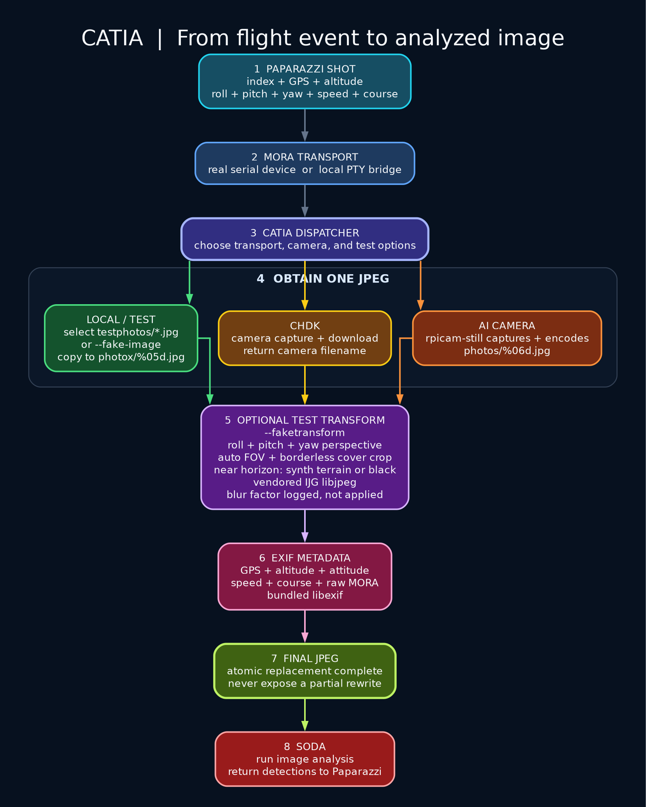

CATIA Camera Pipeline
Camera Application Triggering Image Analysis receives a MORA shot from Paparazzi, obtains a JPEG, adds flight metadata, and passes the finished image to SODA.
Maintainers: edit this README.md and catia-flow.dot, then run
./update-documentation.sh. The PNG, SVG, and HTML page are generated files.

Open the standalone HTML guide
Start Here: Local Simulation
This is the simplest way to verify the complete chain without camera hardware. Run these commands from the Paparazzi repository root.
1. Build CATIA
make -C sw/airborne/modules/digital_cam/catia
2. Start the local camera service
sw/airborne/modules/digital_cam/catia/run_local_demo.sh
The script builds CATIA, creates the local serial bridge, and starts CATIA with
the bundled fake image. It also enables --debug. Leave this terminal running
while NPS is running.
The important startup line is:
Started OK
CATIA and NPS may now start in either order. The simulation UART retries while
/tmp/catia-sim is absent and reconnects automatically after CATIA is stopped
and started again. This allows CATIA to be rebuilt and restarted without
interrupting a running simulation.
After first receiving this feature, rebuild and restart NPS once so the running simulator contains the reconnect-capable UART implementation. Subsequent CATIA restarts do not require another NPS restart.
3. Trigger a photo from Paparazzi
Start the aircraft simulation and trigger DC_SHOOT, for example through the
camera flight-plan block. NPS sends the shot index, position, altitude,
attitude, speed, and course to CATIA.
For every completed capture, CATIA prints:
Photo take 6
The corresponding local image is:
sw/airborne/modules/digital_cam/catia/photox/00006.jpg
4. Confirm the complete chain
A healthy local capture ends with messages similar to:
Shooting: got image .../photox/00006.jpg
Shooting: EXIF metadata added
Photo take 6
SODA: I looked at the image. Cool, right?
Shooting: soda return 0 ...
Stop CATIA with Ctrl+C. CATIA also stops the local socat bridge that it
created.
Choose a Camera
CATIA separates the serial transport from the camera backend. --local creates
the simulator serial bridge; --chdk and --aicam select physical cameras.
| Goal | Command | Image source |
|---|---|---|
| Complete local simulation | catia --local |
Bundled fake JPEG |
| CHDK on the default serial port | catia --chdk |
CHDK capture and download |
| Raspberry Pi camera | catia --aicam |
rpicam-still |
| NPS transport with AI camera | catia --local --aicam |
rpicam-still |
| NPS transport with CHDK | catia --local --chdk |
CHDK capture and download |
When running catia directly from the repository root, use its full path:
sw/airborne/modules/digital_cam/catia/catia --aicam
For readability, later examples shorten this path to catia. Run those
examples from the CATIA directory, add that directory to PATH, or substitute
the full repository-relative path shown above.
Use a specific real serial endpoint with either physical camera:
sw/airborne/modules/digital_cam/catia/catia \
--serial /dev/ttyUSB0 \
--aicam
--serial and --local cannot be combined because --local owns its PTY
bridge.
AI camera command
The AI-camera backend starts rpicam-still directly, without a shell:
rpicam-still \
-o photos/%06d.jpg \
--width 4056 \
--height 3040 \
--hflip \
--vflip
CATIA waits for the process to finish and rejects a missing, empty, or failed capture.
Test Any Camera Selection
Add --test to bypass camera hardware while retaining the selected backend in
the logs. This is useful before connecting CHDK or Raspberry Pi hardware.
catia --local --test
catia --chdk --test
catia --aicam --test
catia --local --chdk --test
catia --local --aicam --test
In all five cases, CATIA uses a test JPEG and still performs the normal EXIF and
SODA stages. It does not start CHDK or rpicam-still.
Use a test-photo set
Create testphotos beside the built catia executable:
sw/airborne/modules/digital_cam/catia/
|-- catia
`-- testphotos/
|-- coast.jpg
|-- field.jpg
`-- village.jpg
Then run, for example:
sw/airborne/modules/digital_cam/catia/catia --aicam --test
Selection rules are deliberately simple:
- Only readable files ending in
.jpgare candidates; matching is case-insensitive. - With one candidate, CATIA always uses that image.
- With several candidates, CATIA randomly selects one for each shot.
- If the directory is absent or empty, CATIA uses the compiled default image.
To force one particular file and skip test-set selection:
catia --aicam --test --fake-image /absolute/path/example.jpg
Simulate Aircraft Attitude
--faketransform makes a test image look as though it was captured at the
aircraft attitude carried in the MORA shot:
catia --local --aicam --test --faketransform
The transform:
- applies roll, pitch, and yaw with a pinhole-camera homography;
- uses bilinear pixel sampling;
- automatically zooms, recenters, and crops the projected view so no black border is exposed;
- preserves the original width and height;
- runs before EXIF metadata and SODA;
- is disabled by default and requires
--test.
The automatic cover crop uses the largest borderless view available from the source image. This behaves like digital zoom: edge content can be cropped and some source resolution is traded for a complete camera frame. CATIA logs the applied zoom and pan for each transformed image. The virtual field of view and crop are optimized together to minimize resolution loss while preserving the requested roll, pitch, and yaw exactly.
Near the pinhole projection horizon, a single source photo does not contain all terrain that the tilted camera would reveal. By default CATIA synthesizes the missing terrain with mirrored continuation of the source texture. This keeps the requested attitude, fills the entire frame, and avoids hard tile seams or black borders.
Near-horizon detection uses three configurable limits. Reaching any limit activates the selected near-horizon behavior:
| C define | Make variable | Default | Meaning |
|---|---|---|---|
near_horizon_roll_deg |
NEAR_HORIZON_ROLL_DEG |
75.0 |
Absolute roll limit |
near_horizon_pitch_deg |
NEAR_HORIZON_PITCH_DEG |
75.0 |
Absolute pitch limit |
near_horizon_combined_tilt_deg |
NEAR_HORIZON_COMBINED_TILT_DEG |
70.0 |
Optical-axis tilt derived from roll and pitch |
The default is:
#define near_horizon_case_black 0
Set it to 1 to skip terrain transformation and immediately generate a black
JPEG with the same dimensions. This is faster and useful when near-horizon
imagery should be treated as unavailable:
make -C sw/airborne/modules/digital_cam/catia \
NEAR_HORIZON_CASE_BLACK=1
Customize thresholds at build time, for example:
make -C sw/airborne/modules/digital_cam/catia \
NEAR_HORIZON_ROLL_DEG=70.0 \
NEAR_HORIZON_PITCH_DEG=65.0 \
NEAR_HORIZON_COMBINED_TILT_DEG=60.0
All thresholds are validated in the range 0..180 degrees.
CATIA also calculates and logs:
blur_factor = ground_speed_m_s / 100
The blur factor is reserved for future use. No blur is currently applied.
How the JPEG Is Saved
The answer depends on the selected source. CATIA does not use one universal JPEG-saving function.
Local and test images
local_pipe_shoot() copies the chosen source JPEG to photox/%05d.jpg. It uses
bounded POSIX open(), read(), and write() loops and handles partial writes.
The bytes are already JPEG encoded; this stage does not decode or re-encode
them.
Raspberry Pi AI camera
ai_cam_pipe_shoot() uses posix_spawnp() to execute rpicam-still with a
fixed argument list. rpicam-still is the component that captures and JPEG
encodes the image. The default result is photos/%06d.jpg.
CHDK camera
chdk_pipe_shoot() instructs the CHDK camera to capture and download a JPEG.
CHDK supplies the final filename to CATIA.
Optional transform and EXIF
After any backend returns a JPEG, the shared processing pipeline runs:
- With
--faketransform,image_fake_transform()decodes the image, applies the attitude homography and borderless cover crop, then re-encodes it using the vendored IJG libjpeg implementation. image_exif_write()builds metadata with bundled libexif and inserts the EXIF APP1 segment.- Both rewriting stages use a temporary file,
fsync(), and atomicrename(); consumers never see a partially rewritten destination. - SODA starts only after the final JPEG and EXIF metadata are ready.
The EXIF record includes GPS coordinates, MSL and ground altitude, roll, pitch, yaw, ground speed, course, shot index, and the original raw MORA fields.
Performance and Target CPUs
The default build is tuned for both modern AMD64 Linux systems and ARM64 Linux on the Raspberry Pi Zero 2 W without embedding CPU-specific instructions:
- CATIA, SODA, bundled IJG libjpeg, and bundled libexif compile with
-O2; - the attitude warp advances its projective coordinates across each scanline;
- bilinear coordinates and weights are calculated once for all RGB channels;
- CATIA drains serial input in chunks instead of one byte per millisecond;
poll()sleeps until serial or UDP work arrives, reducing idle CPU use;- SODA starts directly with
posix_spawnp()instead of through a shell; - processing workers are detached, bounded, and drained before shutdown;
- CHDK reads have monotonic whole-operation deadlines and checked I/O;
- SODA is terminated and reaped during shutdown, with a bounded grace period;
- project sources compile with warnings treated as errors, while bundled third-party objects are isolated in the build.
On the development AMD64 system, ten 1200x899 decode-transform-encode cycles
improved from approximately 1.10 s to 0.56 s for a normal attitude and from
1.41 s to 0.75 s for synthesized terrain: about 49% and 47% less wall
time respectively. The event-driven idle loop used zero measured CPU ticks in a
three-second local sample and dispatched a test trigger in under one
millisecond. These are local reference measurements, not Raspberry Pi
guarantees.
Override the portable optimization level when profiling or debugging:
make -C sw/airborne/modules/digital_cam/catia clean all OPTFLAGS=-O0
The repository contains an OpenCV-embedded libjpeg-turbo tree. It is not linked directly because that component requires CMake-generated headers plus different NASM/NEON SIMD source selection for AMD64 and ARM64. The current bundled IJG codec remains self-contained and cross-compiles reliably. A future switch to libjpeg-turbo should build it as a proper separate library rather than compile its source files ad hoc.
Output Locations
| Source | Default output | Filename example |
|---|---|---|
Local or --test |
catia/photox/ |
00006.jpg |
| AI camera | catia/photos/ |
000006.jpg |
| CHDK | Returned by CHDK | Camera-defined |
Change paths or the camera command at build time:
make -C sw/airborne/modules/digital_cam/catia \
CATIA_LOCAL_PHOTO_DIR=/data/test-photos \
CATIA_AI_CAM_PHOTO_DIR=/data/camera-photos \
CATIA_AI_CAM_COMMAND=/usr/bin/rpicam-still
Command Reference
| Option | Meaning |
|---|---|
--local |
Create /tmp/catia-sim and /tmp/catia-app for local simulation |
--serial DEVICE |
Use a specific real serial endpoint |
--chdk |
Select the CHDK camera backend |
--aicam |
Select the Raspberry Pi camera backend |
--test |
Replace physical capture with a test JPEG |
--fake-image FILE |
Use one explicit JPEG instead of testphotos |
--faketransform |
Apply test-only roll, pitch, and yaw transformation |
--debug |
Show serial traffic, MORA frame, trigger, and capture diagnostics |
--help |
Print the built-in command help |
Troubleshooting
Socket: bind: Address already in use
Another CATIA process is already using the socket. Stop the older process before starting another instance.
pgrep -af catia
local mode is already running
Only one process may own the local PTY bridge. Stop the existing local CATIA
process with Ctrl+C, then start the demo again.
No image appears
run_local_demo.sh enables --debug automatically. Check the log in this
order:
Started OKconfirms CATIA initialized.CATIA DEBUG: waiting for MORA data: 0 bytes, 0 valid frames, 0 rejected framesmeans CATIA is healthy but has not received camera traffic yet. A reconnect-capable NPS instance will attach automatically within a short interval; the next camera trigger should then appear.received MORA frame startconfirms serial bytes reached CATIA.rejected MORA frameindicates framing or checksum failure.accepted MORA message id 1andphoto trigger receivedconfirm a valid shot command.SHOT NRshows the decoded flight and attitude data.Shooting: got image ...confirms capture or test-copy completion.EXIF metadata addedconfirms metadata insertion.soda return 0confirms analysis completed successfully.
Enable the same diagnostics for a non-local command by adding --debug:
catia --aicam --debug
Restart CATIA without restarting NPS
The simulation UART checks for /tmp/catia-sim every 200 ms. When CATIA stops,
NPS detects the closed PTY and keeps flying. Use this development loop:
# Stop CATIA with Ctrl+C, then rebuild and restart it:
make -C sw/airborne/modules/digital_cam/catia
sw/airborne/modules/digital_cam/catia/run_local_demo.sh
NPS remains running throughout. Camera commands issued while CATIA is stopped cannot be recovered, but later commands are delivered after reconnection.
Build shows libexif or libjpeg warnings
The bundled third-party sources may emit compiler warnings. A successful build
still creates the catia and soda_local executables. Errors reported against
CATIA-owned sources should be investigated.
Regenerate the Diagram
The Markdown guide and Graphviz DOT file are the canonical documentation
sources. After changing CATIA behavior or commands, update both as needed and
run this from the documentation directory:
./update-documentation.sh
The script validates its dependencies, renders catia-flow.png and
catia-flow.svg with Graphviz, and rebuilds index.html from this Markdown
file. It then checks that every generated file is nonempty.
Required tools:
- Graphviz
dot; - Python 3;
- Python package
Markdown(python3 -m pip install Markdown).
Do not edit index.html, catia-flow.png, or catia-flow.svg directly; the
next documentation update replaces them.